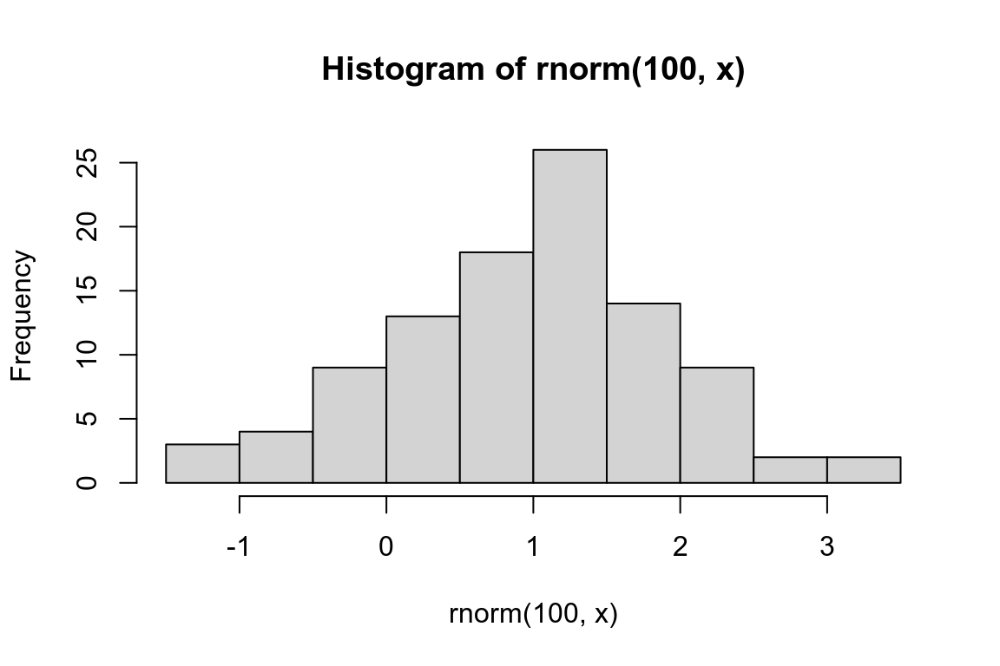
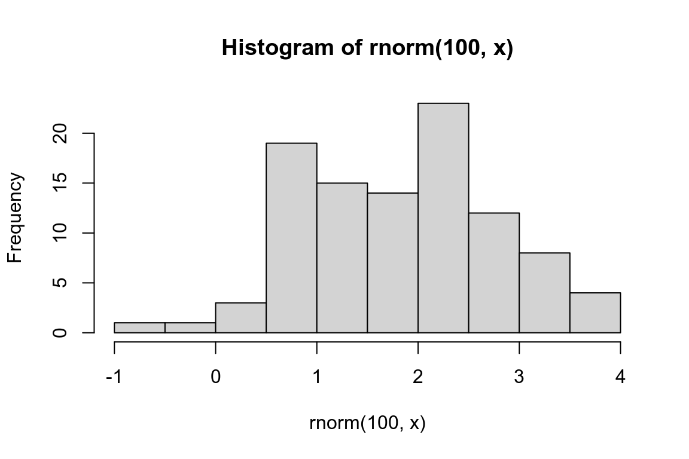
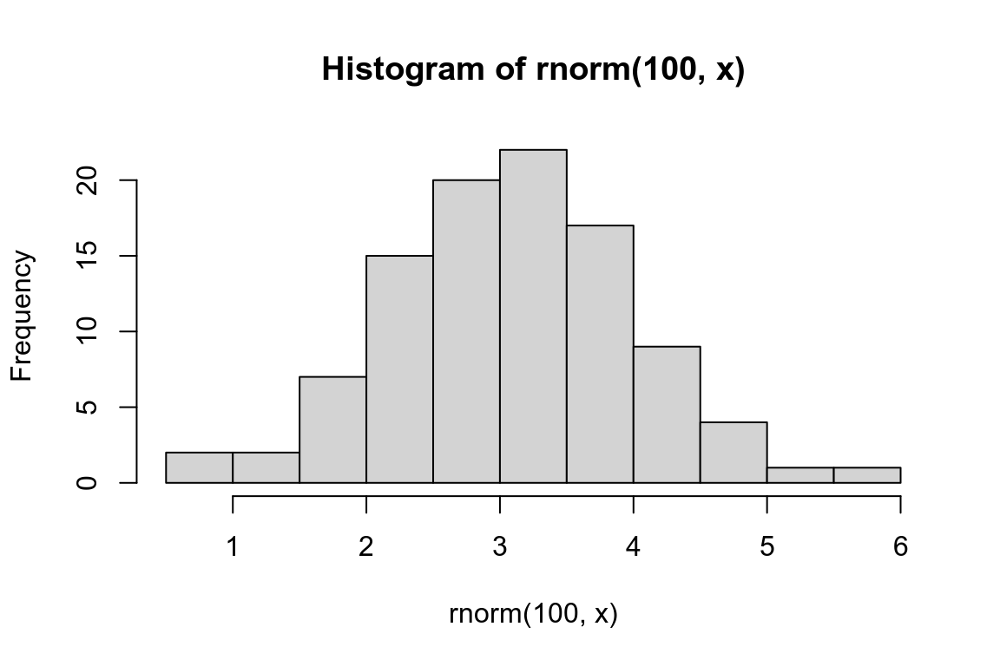
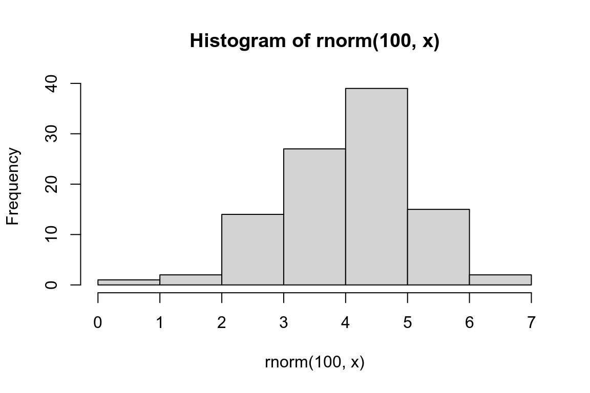

library(tidyverse)26 Iteration
简介
在tidyverse中有一些常见的循环操作，如：
- 绘制分面——
facet_wrap(),facet_grid() - 分组总结–
group_by(),summarise() - list-column解压——
unnest_wider(),unnest_longer()
下面我们学习另外一些循环技巧。
循环操作数据框中的列
假设现在有一个多列的数据框，你要对某些列进行中位数统计。
df <- tibble(
a = rnorm(10),
b = rnorm(10),
c = rnorm(10),
d = rnorm(10)
)你首先会想到对每一列执行相同的操作，如下。
df |> summarize(
n = n(),
a = median(a),
b = median(b),
c = median(c),
d = median(d),
)
#> # A tibble: 1 × 5
#> n a b c d
#> <int> <dbl> <dbl> <dbl> <dbl>
#> 1 10 -0.246 -0.287 -0.0567 0.144如果再增加很多列呢，上述的写法会及其冗长，dplyr提供了across函数，能更加方便地实现目的。
df |> summarize(
n = n(),
across(a:d, median),
)
#> # A tibble: 1 × 5
#> n a b c d
#> <int> <dbl> <dbl> <dbl> <dbl>
#> 1 10 -0.246 -0.287 -0.0567 0.144下面介绍across()的三个主要参数：.cols、.fns和.names。
选择列
.cols控制选择哪几列，是一个tidy-select类，类似于dplyr中的select()，可以使用适配select()的函数，如starts_with()、contains()等。
更多有过关于tidy-select的内容，可以参考?dplyr_tidy_select。
df <- tibble(
grp = sample(2, 10, replace = TRUE),
a = rnorm(10),
b = rnorm(10),
c = rnorm(10),
d = rnorm(10)
)
df |>
group_by(grp) |>
summarize(across(everything(), median))
#> # A tibble: 2 × 5
#> grp a b c d
#> <int> <dbl> <dbl> <dbl> <dbl>
#> 1 1 -0.0935 -0.0163 0.363 0.364
#> 2 2 0.312 -0.0576 0.208 0.565函数
.fns参数提供across()进行call的函数，可以是 - 函数名，例如mean，注意此处函数后不能有() - purrr-style lambda，例如~mean(.x, na.rm = TRUE) - 上述两种函数组成的named list，例如list(mean = mean,n_miss = ~ sum(is.na(.x))
函数名
# 函数名后有`()`会报错。
df |>
group_by(grp) |>
summarize(across(everything(), median()))
#> Error in `summarize()`:
#> ℹ In argument: `across(everything(), median())`.
#> Caused by error in `median.default()`:
#> ! argument "x" is missing, with no defaultpurrr-style lambda
rnorm_na <- function(n, n_na, mean = 0, sd = 1) {
sample(c(rnorm(n - n_na, mean = mean, sd = sd), rep(NA, n_na)))
}
df_miss <- tibble(
a = rnorm_na(5, 1),
b = rnorm_na(5, 1),
c = rnorm_na(5, 2),
d = rnorm(5)
)
df_miss |>
summarize(
across(a:d, ~ median(., na.rm = TRUE)),
n = n()
)
#> # A tibble: 1 × 5
#> a b c d n
#> <dbl> <dbl> <dbl> <dbl> <int>
#> 1 0.139 -1.11 -0.387 1.15 5
df_miss |>
summarize(
across(a:d, function(x) median(x, na.rm = TRUE)),
n = n()
)
#> # A tibble: 1 × 5
#> a b c d n
#> <dbl> <dbl> <dbl> <dbl> <int>
#> 1 0.139 -1.11 -0.387 1.15 5
df_miss |>
summarize(
across(a:d, \(x) median(x, na.rm = TRUE)),
n = n()
)
#> # A tibble: 1 × 5
#> a b c d n
#> <dbl> <dbl> <dbl> <dbl> <int>
#> 1 0.139 -1.11 -0.387 1.15 5函数list
df_miss |>
summarize(
across(a:d, list(
median = \(x) median(x, na.rm = TRUE),
n_miss = \(x) sum(is.na(x))
)),
n = n()
)
#> # A tibble: 1 × 9
#> a_median a_n_miss b_median b_n_miss c_median c_n_miss d_median d_n_miss
#> <dbl> <int> <dbl> <int> <dbl> <int> <dbl> <int>
#> 1 0.139 1 -1.11 1 -0.387 2 1.15 0
#> # ℹ 1 more variable: n <int>列名
如果你仔细观察，上面例子中的列名类似于{.col}_{.fn}（这也是为什么函数list是要有name属性的原因）。
.names参数控制列名定义规则，使用{.col}表示原始列名，{.fn}表示函数名；单个函数默认{.col}，多个函数默认{.col}_{.fn}。
across()在与mutate()联用时会将原来的列覆盖，因为.names()默认是{.col}，所以看不出来，当参数值改变后就会直观的体现出来：
与mutate联用
df_miss |>
mutate(
across(a:d, \(x) coalesce(x, 0), .names = "{.col}_na_zero")
)
#> # A tibble: 5 × 8
#> a b c d a_na_zero b_na_zero c_na_zero d_na_zero
#> <dbl> <dbl> <dbl> <dbl> <dbl> <dbl> <dbl> <dbl>
#> 1 0.434 -1.25 NA 1.60 0.434 -1.25 0 1.60
#> 2 NA -1.43 -0.297 0.776 0 -1.43 -0.297 0.776
#> 3 -0.156 -0.980 NA 1.15 -0.156 -0.980 0 1.15
#> 4 -2.61 -0.683 -0.785 2.13 -2.61 -0.683 -0.785 2.13
#> 5 1.11 NA -0.387 0.704 1.11 0 -0.387 0.704filter()中的循环
dplyr 提供了两个across()的变体:
if_any()：至少有一个条件返回TRUEif_all()：所有条件返回TRUE
# same as df_miss |> filter(is.na(a) | is.na(b) | is.na(c) | is.na(d))
df_miss |> filter(if_any(a:d, is.na))
#> # A tibble: 4 × 4
#> a b c d
#> <dbl> <dbl> <dbl> <dbl>
#> 1 0.434 -1.25 NA 1.60
#> 2 NA -1.43 -0.297 0.776
#> 3 -0.156 -0.980 NA 1.15
#> 4 1.11 NA -0.387 0.704
# same as df_miss |> filter(is.na(a) & is.na(b) & is.na(c) & is.na(d))
df_miss |> filter(if_all(a:d, is.na))
#> # A tibble: 0 × 4
#> # ℹ 4 variables: a <dbl>, b <dbl>, c <dbl>, d <dbl>与piovt_longer()对比
使用piovt_longer()可以实现across()，反之则不成立。例如下面的两个例子
across
df |>
summarize(across(a:d, list(median = median, mean = mean)))
#> # A tibble: 1 × 8
#> a_median a_mean b_median b_mean c_median c_mean d_median d_mean
#> <dbl> <dbl> <dbl> <dbl> <dbl> <dbl> <dbl> <dbl>
#> 1 0.0380 0.205 -0.0163 0.0910 0.260 0.0716 0.540 0.508pivot_longer 复现
long <- df |>
pivot_longer(a:d) |>
group_by(name) |>
summarize(
median = median(value),
mean = mean(value)
)
long |>
pivot_wider(
names_from = name,
values_from = c(median, mean),
names_vary = "slowest",
names_glue = "{name}_{.value}"
)
#> # A tibble: 1 × 8
#> a_median a_mean b_median b_mean c_median c_mean d_median d_mean
#> <dbl> <dbl> <dbl> <dbl> <dbl> <dbl> <dbl> <dbl>
#> 1 0.0380 0.205 -0.0163 0.0910 0.260 0.0716 0.540 0.508只能使用pivot_longer
df_paired <- tibble(
a_val = rnorm(10),
a_wts = runif(10),
b_val = rnorm(10),
b_wts = runif(10),
c_val = rnorm(10),
c_wts = runif(10),
d_val = rnorm(10),
d_wts = runif(10)
)
df_long <- df_paired |>
pivot_longer(
everything(),
names_to = c("group", ".value"),
names_sep = "_"
)
df_long
#> # A tibble: 40 × 3
#> group val wts
#> <chr> <dbl> <dbl>
#> 1 a 0.715 0.518
#> 2 b -0.709 0.691
#> 3 c 0.718 0.216
#> 4 d -0.217 0.733
#> 5 a -1.09 0.979
#> 6 b -0.209 0.675
#> # ℹ 34 more rows
df_long |>
group_by(group) |>
summarize(mean = weighted.mean(val, wts))
#> # A tibble: 4 × 2
#> group mean
#> <chr> <dbl>
#> 1 a 0.126
#> 2 b -0.0704
#> 3 c -0.360
#> 4 d -0.248purrr::map() 类函数
原文中有关map()的内容是一个循环读取文件的例子，由于实际工作中，循环读取文件的操作极少见，所以不再这里赘述，可以参考原文中的例子，主要使用了purrr::map()和purrr::list_rbind()。
map()函数循环对一个list或原子向量进行操作，生成一个与输入等长的对象；如果输入有name属性，那么输出也会保留name属性。
函数有两个重要的参数：
.x：原子向量或list.f：- 普通函数，例如
mean。 - purrr-style lambda，例如
~mean(.x, na.rm = TRUE)。 - 匿名函数，例如
\(x) x + 1或function(x) x + 1.。 - 字符串、正数或者list，例如
"idx",1或list("idx", 1)；其作用是类似于purrr::pluck()，提取x的idx或x[[1]]；当提取的元素为NULL时，可以配置.default。
- 普通函数，例如
当使用管道符时，.x通常是管道前的结果。
# 普通函数
1:5 |>
map(rnorm, n = 5)
#> [[1]]
#> [1] 2.444187 1.242889 1.168512 1.239065 1.236321
#>
#> [[2]]
#> [1] 1.7408808 2.6490457 0.7823590 2.8419704 0.3807894
#>
#> [[3]]
#> [1] 3.264166 3.097311 4.788865 2.011317 4.890903
#>
#> [[4]]
#> [1] 5.200827 2.186789 4.370432 3.517323 4.101284
#>
#> [[5]]
#> [1] 5.039077 6.064826 1.290151 6.600178 6.179670
# 匿名函数
1:5 |>
map(\(x) rnorm(5, x))
#> [[1]]
#> [1] -1.6505155 0.2252239 1.6058778 0.6997194 2.0104924
#>
#> [[2]]
#> [1] 0.2306168 2.6722027 1.1737427 1.7081041 1.2221829
#>
#> [[3]]
#> [1] 2.651446 4.011717 2.685228 2.994618 1.641697
#>
#> [[4]]
#> [1] 5.572928 2.800616 3.927344 3.975916 5.584497
#>
#> [[5]]
#> [1] 5.005676 4.351796 6.858663 5.828303 6.199035
# 定位函数
l2 <- list(
"name1" = list(num = 1:3, letters[1:3]),
"name2" = list(num = 101:103, letters[4:6]),
"name3" = list()
)
l2 |> map(c(2, 2), .default = "none")
#> $name1
#> [1] "b"
#>
#> $name2
#> [1] "e"
#>
#> $name3
#> [1] "none"map()函数有很多变体，我将其归为下面三大类。
返回结果不同
map()函数会返回一个list，其变体则不同。
返回输入值
walk()函数只能隐性返回输入，对.f生成的结果没有处理，这在循环绘图中十分便利。
res <- 1:4 |>
walk(\(x) {
hist(rnorm(100, x))
})
res
#> [1] 1 2 3 4



返回结果结构与输入相同
modify()函数会输出一个与输入结构完全相同的结果，常用来修改元素类型。
# Convert to characters
iris |> str()
#> 'data.frame': 150 obs. of 5 variables:
#> $ Sepal.Length: num 5.1 4.9 4.7 4.6 5 5.4 4.6 5 4.4 4.9 ...
#> $ Sepal.Width : num 3.5 3 3.2 3.1 3.6 3.9 3.4 3.4 2.9 3.1 ...
#> $ Petal.Length: num 1.4 1.4 1.3 1.5 1.4 1.7 1.4 1.5 1.4 1.5 ...
#> $ Petal.Width : num 0.2 0.2 0.2 0.2 0.2 0.4 0.3 0.2 0.2 0.1 ...
#> $ Species : Factor w/ 3 levels "setosa","versicolor",..: 1 1 1 1 1 1 1 1 1 1 ...
iris |>
modify(as.character) |>
str()
#> 'data.frame': 150 obs. of 5 variables:
#> $ Sepal.Length: chr "5.1" "4.9" "4.7" "4.6" ...
#> $ Sepal.Width : chr "3.5" "3" "3.2" "3.1" ...
#> $ Petal.Length: chr "1.4" "1.4" "1.3" "1.5" ...
#> $ Petal.Width : chr "0.2" "0.2" "0.2" "0.2" ...
#> $ Species : chr "setosa" "setosa" "setosa" "setosa" ...其还有变体modify_if()，modify_at()，modify2()，imodify()，使用方法相似，具体差异同下面讲到的一样。
返回原子向量
这一类有map_lgl(),map_int(),map_dbl(),map_chr(),map_vec()；要求返回的原子向量类型为函数名后缀规定的类型，否则报错。例如：map_lgl()函数要求返回结果为由TRUE和FALSE构成的向量，否则报错。map_vec()函数提供了参数.ptype，可以指定返回结果的类型。
numbers <- list(1, 2, 3, 4)
map_lgl(numbers, ~ .x %% 2 == 0)
#> [1] FALSE TRUE FALSE TRUE
map_lgl(numbers, ~ .x * 2)
#> Error in `map_lgl()`:
#> ℹ In index: 1.
#> Caused by error:
#> ! Can't coerce from a number to a logical.返回数据框
这一类有map_dfc(),map_dfr()，这两类函数在官方文档中已经不再推荐使用，而是使用map() + list_rbind()/list_cbind()的组合方式。
# map ---------------------------------------------
# Was:
mtcars |>
split(mtcars$cyl) |>
map(\(df) lm(mpg ~ wt, data = df)) |>
map_dfr(\(mod) as.data.frame(t(as.matrix(coef(mod)))))
#> (Intercept) wt
#> 1 39.57120 -5.647025
#> 2 28.40884 -2.780106
#> 3 23.86803 -2.192438
# Now:
mtcars |>
split(mtcars$cyl) |>
map(\(df) lm(mpg ~ wt, data = df)) |>
map(\(mod) as.data.frame(t(as.matrix(coef(mod))))) |>
list_rbind()
#> (Intercept) wt
#> 1 39.57120 -5.647025
#> 2 28.40884 -2.780106
#> 3 23.86803 -2.192438输入元素不同
这一类有：
- 对不同位置元素操作：
map_at(),map_if(),map_depth()。 - 要求元素类型为长度是1的list：
lmap()和其变体lmap_at(),lmap_if()。
map_at()
通过参数.at，提供元素在输入中的位置或name属性，针对特定元素进行操作。
l3 <- list(
a = 1:3,
b = LETTERS[1:3],
c = 7:9
)
l3 |>
map_at(.at = c("a", "c"), ~ .x + 1)
#> $a
#> [1] 2 3 4
#>
#> $b
#> [1] "A" "B" "C"
#>
#> $c
#> [1] 8 9 10map_if()
通过参数.p，提供元素要满足的条件，针对特定元素进行操作，可以是判断函数，也可以是逻辑向量。
l3 |>
map_if(.p = is.numeric, ~ .x + 1)
#> $a
#> [1] 2 3 4
#>
#> $b
#> [1] "A" "B" "C"
#>
#> $c
#> [1] 8 9 10map_depth()
通过参数.depth，提供元素的深度，针对该深度处的元素进行操作。
x <- list(a = list(foo = 1:2, bar = 3:4), b = list(baz = 5:6))
x |> str()
#> List of 2
#> $ a:List of 2
#> ..$ foo: int [1:2] 1 2
#> ..$ bar: int [1:2] 3 4
#> $ b:List of 1
#> ..$ baz: int [1:2] 5 6
x |>
map_depth(2, \(y) paste(y, collapse = "/")) |>
str()
#> List of 2
#> $ a:List of 2
#> ..$ foo: chr "1/2"
#> ..$ bar: chr "3/4"
#> $ b:List of 1
#> ..$ baz: chr "5/6"
# Equivalent to:
x |>
map(\(y) map(y, \(z) paste(z, collapse = "/"))) |>
str()
#> List of 2
#> $ a:List of 2
#> ..$ foo: chr "1/2"
#> ..$ bar: chr "3/4"
#> $ b:List of 1
#> ..$ baz: chr "5/6"lmap() 类
lmap()与map()的不同之处在于，后者提取使用[[i]]来提取list中的元素，返回一个向量，前者使用[i]提取list中的元素，返回一个list。
由于lmap()操作对象是list，所以它可以使用list中的name属性；在返回结果时，它会使用c()将list合并。下面是一个示例：
add_minus <- function(x) {
res1 <- lapply(x, function(y) y - 1)
names(res1) <- paste0(names(x), "_minus")
res2 <- lapply(x, function(y) y + 1)
names(res2) <- paste0(names(x), "_plus")
c(res1, res2)
}
# The output size varies each time we map f()
test <- list(a = 1:4, c = 8:9)
test |>
lmap(add_minus) |>
str()
#> List of 4
#> $ a_minus: num [1:4] 0 1 2 3
#> $ a_plus : num [1:4] 2 3 4 5
#> $ c_minus: num [1:2] 7 8
#> $ c_plus : num [1:2] 9 10所以，lmap()对参数.x，.f有不同的要求：
.x：list 或 data.frame.f：该函数输入为长度是1的list，输出是任意长度的list。
函数参数数目
这一类函数有map2()、pmap()和map2()的变体imap()。这些函数与map()的使用方法类似，只是多提供了一组或多组.f函数的参数。同时这些函数都有*_lgl(),*_int(), *_dbl(), *_chr(), *_vec(), *_dfc(), *_dfr(),*walk()等变体，使用方法同上。
imap()
imap()是map2(x, names(x), ...)或map2(x, seq_along(x), ...)的简写，其余使用方法相同。
set.seed(123)
imap_chr(sample(10), paste)
#> [1] "3 1" "10 2" "2 3" "8 4" "6 5" "9 6" "1 7" "7 8" "5 9" "4 10"